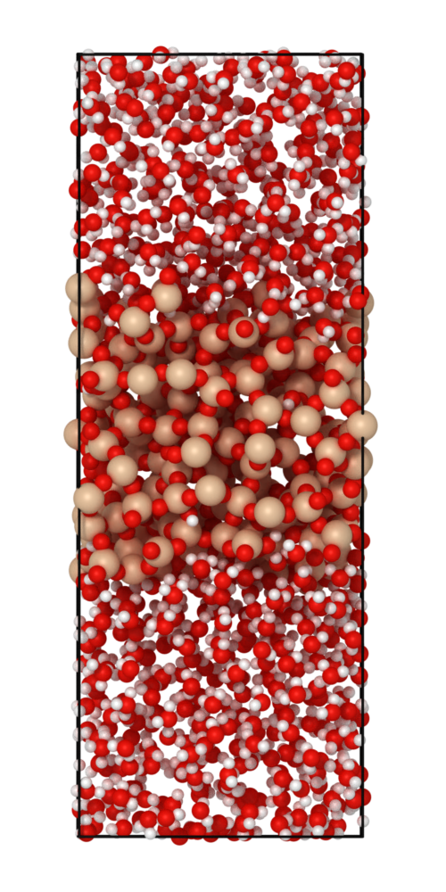
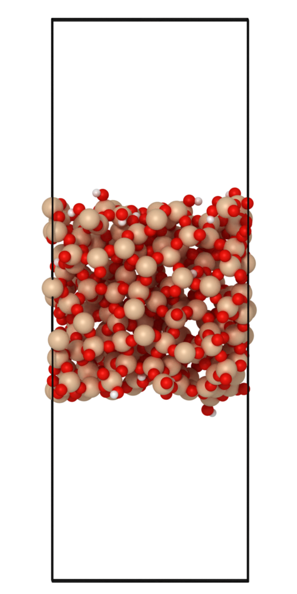

Heat of immersion calculation



The 3 systems required to calculate the heat of immersion are: (left) passivated silica + water, (center) passivated silica, and (right) the water system. The heat of immersion is calculated using the following equation:
\[
\Delta H_{\mathrm{imm}} = \frac{E_{\mathrm{\ce{SiO2}}/\mathrm{\ce{H_2O}}} - (E_{\mathrm{\ce{SiO2}/vac}} + E_{\mathrm{\ce{H_2O}}})}{2A}
\]
Example script to calculate the heat of immersion of an amorphous silica.
from interface_builder import Silica
sim_params = {
'lx' : 3,
'ly' : 3,
'lz' : 3,
'vacuum' : 20,
'filename' : 'silica_amorphous.data',
'output_folder' : f'./passivation/',
'input_folder' : None,
'sio2_potential' : './data/SiO2.vashishta',
'sio2_h2o_potential' : "./passivation_test/potential_hoga_5_0.mod",
'h2o_potential' : './data/potential_shrink_11_4.mod'
}
# ============== INITIALIZATION OF THE SILICA SYSTEM ======
# initilize the silica system
silica = Silica(**sim_params)
sio2_file = silica.build_amorphous(16, "lmp", run=True)
sio2_surface = silica.add_vacuum(sio2_file, 20,
"silica_surface+vacuum2.data",
which="both", run=True)
sio2_relax = silica.thermalize(sio2_surface, time=1000, init_temp=300, final_temp=300,
output_filename="amorphous_surface_thermalized.data",
mpirun_n=16, lmp_exec="lmp", run=True)
minimized_sio2 = sio2.minimize_sio2(silica_relax, mpirun_n=16, lmp_exec="lmp", run=True)
print("Defects O, Si : ", sio2.get_coordination(minimized_silica))
# ============== PASSIVATION OF THE SILICA SYSTEM ==========
passivated_silica = silica.passivate_new(silica_relax, run=True)=
passivate_silica_thermalized = silica.thermalize_passivated(passivated_silica,
time=50, temp=300,
mpirun_n=16,
lmp_exec="lmp_usc",
run=True)
# Run the cleaner
passivated_silica_clean = silica.clean_free_oh(passivate_silica_thermalized)
print("Silanol concentration = ", silica.get_silanol(passivated_silica_clean))
# Recursively thermalize and passivate
for _ in range(3):
passivated_silica = silica.passivate_new_again(passivated_silica_clean, run=True)
passivated_silica_clean = silica.hydroxylate_surface(passivated_silica, run=True)
passivate_silica_thermalized = silica.thermalize_passivated(passivated_silica,
time=100, temp=300,
mpirun_n=16,
lmp_exec="lmp_usc",
run=True)
passivated_silica_clean = silica.clean_free_oh(passivate_silica_thermalized)
print("Silanol concentration = ", silica.get_silanol(passivated_silica_clean))
# ============== WATER + PASSIVATED SILICA SYSTEM ==========
h2o_silica_system = silica.add_water(passivated_silica_clean,
gap = 1.0, buffer=0.5,
which="both")
# calculate the HOI
heat_energy, A = silica.get_heat_of_immersion_v2(passivated_silica_clean,
h2o_silica_system, run=True)
print('HOI:',heat_energy)
print('Area', A)